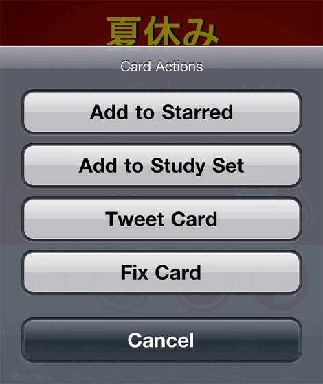

If you find things you believe are incorrect, please us know. It's quick & easy!
Press the + button on the Practice screen. You can select to report the correction using the buttons displayed.
Using the form displayed below, you can immediately send us details for inclusion in the next update of Japanese Flash.